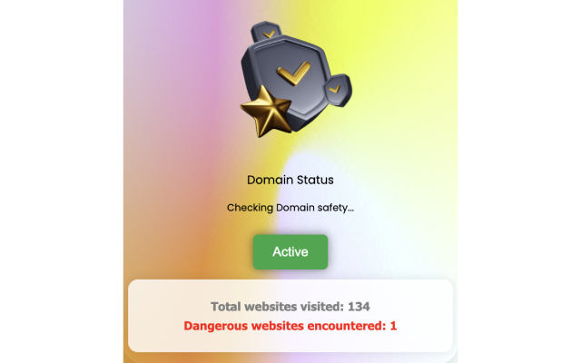
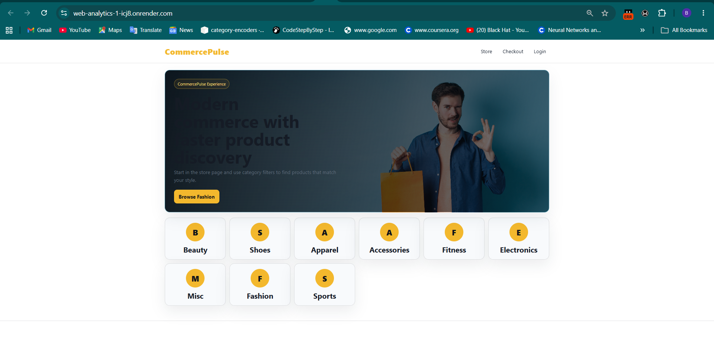

Lagos, Nigeria
Data Scientist and Analyst with experience at Intellidane Cybernetics, NextCounsel, and as a Freelancer.
Specialised in Machine Learning, Deep Learning, Time Series Forecasting, and building
data-driven products. B.Sc. Information Systems — Federal University of Technology (2023).
Python (Pandas · Scikit-learn · TensorFlow · Keras · PyTorch)
SQL
Power BI
Excel
Tableau
Time Series Forecasting
Sentiment Analysis
Reinforcement Learning
NLP / Deep Learning

AI-powered Chrome extension detecting and flagging malicious URLs in real time using a Random Forest classifier. Features real-time detection, a Flask API backend, and seamless Chrome integration for enhanced online security.

Flask-based analytics engine running entirely on flat files, delivering enterprise-grade KPIs and customer segmentation without a database. Features real-time behavioral tracking, demographic/loyalty segmentation, RFM analysis, and interactive dashboards—deployed via Docker for zero-infrastructure rapid deployment.
Reinforcement Learning · Security
Reinforcement learning-based NIDS trained on the NSL-KDD dataset achieving 94% F1-score. Features intelligent threat detection, real-time traffic anomaly monitoring, and a scalable architecture for existing infrastructures.

AI chatbot combining LSTM for NLP and DistilRoBERTa for sentiment analysis, delivering empathetic, emotion-aware mental health support. Adopted by 3 academic research teams. Real-time, context-aware responses.
Proprietary algorithmic trading system implementing SMA(200) and EMA(200) strategies for automated cryptocurrency trade decisions. Built during tenure at Intellidane Cybernetics alongside LSTM-based price prediction.
AI in Finance · Calibrating Stochastic Volatility

Stochastic volatility model with jumps calibrated to SM Energy option data using Fourier-transform methods (Carr-Madan 1999 & Lewis 2001), achieving sub-$0.05 RMSE on 60-day options. Deployed via REST API for real-time option pricing and risk analytics.
AI in Finance · Hidden Markov Model-Based Market Regime Detection

Hidden Markov Model-driven volatility regime detection using VIX dynamics with a 3-state probabilistic framework. Improved risk-adjusted returns by 123% (Sharpe: 0.551 → 1.227) with real-time regime switching and optimized defensive asset allocation.